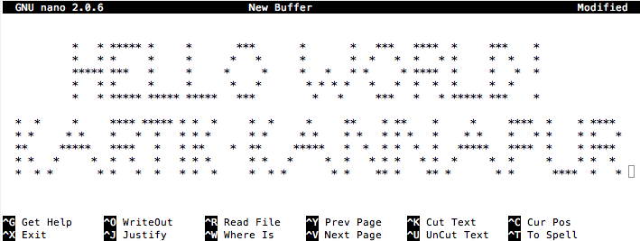

I am a Data Enthusiast with a background in Web development, Python and Community Management. I also have a degree in Electronics and Communication Engineering from PESIT, Bangalore. I have been a part of multiple communities such as Google Developer Group (GDG) Bangalore, IEEE and TEDx. I also blog at SingleQuote.

Feel free to reach out to me at kartikkannapur@gmail.com

Disclaimer : The opinions expressed in this blog are my own and in no way related to my employer in any form.